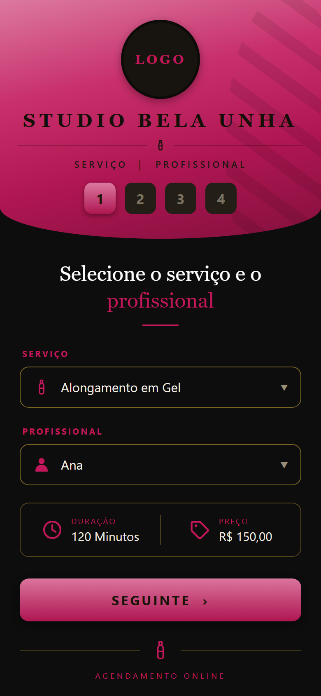
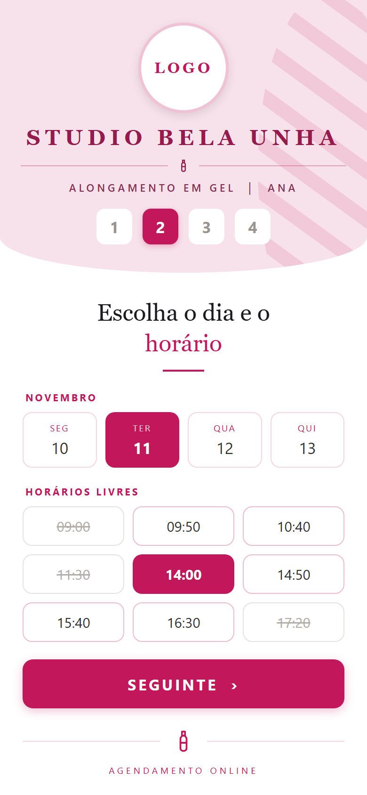
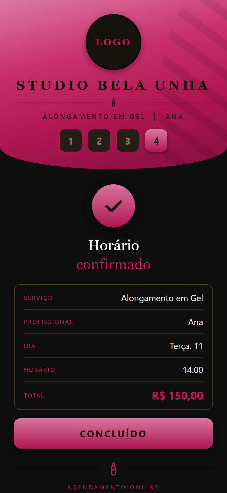
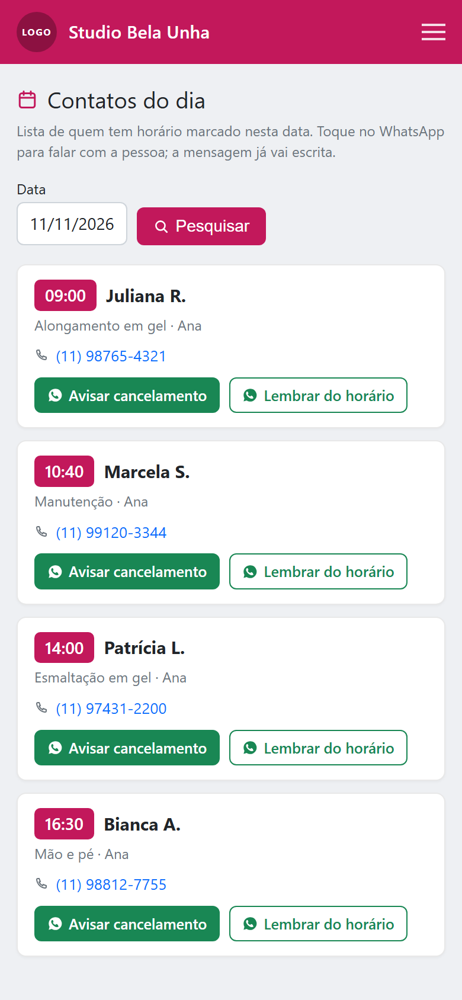

Agenda online para manicure, pedicure e nail designer, com o seu nome e a sua cor na tela. Ela abre o link, vê os horários que você tem livres e marca em quatro toques, sem baixar aplicativo, sem criar senha e sem esperar você largar o alicate para responder.

A demo aberta é de uma barbearia: foi o primeiro segmento que atendemos e ainda não montamos uma de unhas. O app é exatamente o mesmo: mudam os serviços, os nomes, o logo e as cores. Se preferir ver com a sua marca antes de decidir, é só chamar no WhatsApp que a gente monta.
Quem trabalha com unha atende com as duas mãos e não pode parar. O celular apita no meio do alongamento, a cliente da cadeira espera, e a que mandou mensagem espera também. Quando você finalmente responde, já se passaram quarenta minutos, e boa parte das conversas era a mesma pergunta: “tem horário quinta à tarde?”
Essa pergunta não precisa de você. Ela precisa de uma tela mostrando o que está livre. É isso que o Horário Cheio faz: tira de você a parte da conversa que é só consulta de agenda e deixa a parte que é atendimento.
Você para de responder para marcar, para de anotar em caderno, para de perder o horário porque a mensagem sumiu no meio de trinta conversas, e a cliente marca às onze da noite, quando ela lembra, sem depender de você estar acordada.
Este é o detalhe que faz diferença em unha e quase não faz em outros ramos: os seus serviços têm durações muito diferentes. Um alongamento não cabe no vão que sobrou antes do almoço; uma manutenção cabe. Você cadastra a duração real de cada um, e o sistema só oferece à cliente o horário em que aquele serviço cabe de verdade.
Arraste a tabela para o lado para ver todas as colunas →
| Serviço | Duração cadastrada | O que a cliente vê |
|---|---|---|
| Alongamento em gel ou fibra | 2h a 3h | só os dias com bloco livre desse tamanho |
| Manutenção | 1h30 | encaixa onde o alongamento não cabia |
| Mão e pé tradicional | 1h10 | horários curtos entre atendimentos |
| Esmaltação em gel | 50 min | preenche as sobras do dia |
Os serviços, os tempos e os preços são os seus. Esta tabela é só um exemplo do ramo. Na montagem a gente cadastra a sua lista junto com você.


As telas acima são do app com um estúdio de exemplo. No seu, o nome, o logo e a cor são os seus, e nenhuma marca de fornecedor aparece para a cliente.
Quem paga o app é você, então esta parte é a que importa. Tudo abaixo você faz do celular, sozinha, sem pedir para ninguém e sem custo adicional.
A tela que resolve o dia em que dá problema é a de contatos do dia: você acordou doente, precisa avisar as quatro pessoas marcadas e não quer procurar o número de cada uma no meio das conversas. Você abre a data e vê quem está marcado, em ordem de horário, com o serviço, o telefone e dois botões de WhatsApp por cliente: a mensagem já vai escrita, citando o nome dela e o horário, e você pode alterar antes de enviar.
É um botão por cliente e você aperta enviar. Disparo automático para muita gente de uma vez é o padrão que faz o WhatsApp bloquear o número, e o número é o seu negócio.

Dia, semana, mês ou lista. A cliente pediu para mudar de horário? Você arrasta o agendamento para o lugar novo.
Toca no horário e aparecem dois botões: confirmar presença e pedir para remarcar. O segundo manda a cliente para o link dela, que só oferece horário que está mesmo livre.
Um registro só cobre o período inteiro, e aqueles dias somem da tela da cliente na hora. Quem tem mais de uma profissional bloqueia a agenda de uma sem mexer na da outra.
O médico de quinta às 15h não precisa virar dia perdido: você fecha aquela janela e o resto do dia continua aberto.
Feriado, reforma, viagem: um período bloqueado vale para todas as profissionais de uma vez.
Nome, duração, preço e cor de cada serviço. Você mesma cadastra e muda quando quiser: reajuste de preço não passa pela gente.
Cada uma com o horário dela, o almoço dela e a folga da semana. A cliente escolhe com quem quer marcar, ou deixa em “qualquer profissional”.
A cliente que ligou, que mandou mensagem ou que apareceu na porta entra pelo painel, no horário que você quiser. O link público é um caminho a mais, não o único.
Quem já veio, quando veio e o que fez. A lista é sua: pode ser exportada em planilha quando você pedir, e isso está escrito em contrato.
Agenda lotada ou você fora do país: a página sai do ar com um recado no lugar e volta com um clique, sem perder nada.
Saem das definições e valem para tudo de uma vez: a página da cliente, o painel, o ícone da aba do navegador e o favicon.
A sua instalação é separada, com banco de dados próprio. Nenhuma cliente sua esbarra em dado de outro estúdio.
Os dois planos têm o app inteiro. A diferença é o endereço e o quanto fazemos por você.
Para o estúdio que quer parar de responder “tem horário?” ainda esta semana.
Para quem quer endereço próprio na internet, com a cara da casa.
14 dias grátis para testar, sem cartão. Sem fidelidade e sem multa para cancelar.
Preferimos que você saiba agora e não depois de pagar:
Se a sua regra é sinal para segurar alongamento, isso continua sendo combinado por fora.
A mensagem sai pronta e você toca em enviar. É decisão de projeto: envio automático em massa é o caminho mais curto para o WhatsApp bloquear o seu número, e o seu número é o seu negócio.
Nem fidelidade por carimbo.
Ele organiza quem já procura você. Quem leva a cliente até o link continua sendo o seu Instagram e a sua indicação.
O que ele faz bem é uma coisa só: tirar a marcação de horário de cima de você, com a sua marca na tela.
Serve, e é o caso mais comum. O preço é por estúdio e não por profissional, então trabalhar sozinha não sai mais caro nem mais barato: você paga R$ 49,90 e cadastra só o seu nome. O endereço não aparece para a cliente a não ser que você escreva, o que resolve a preocupação de quem atende em casa.
Não. O link abre no navegador do celular dela, como uma página comum. Não tem cadastro, não tem senha, não tem app para instalar. O formulário pede só o nome e o celular.
Também não. O painel é uma página, e você entra com usuário e senha pelo navegador do celular ou do computador. Dá para adicionar o atalho na tela de início do celular e ele passa a abrir como se fosse um aplicativo.
Pelo painel, em um registro só: você marca o período e aqueles dias somem da tela da cliente. Dá para bloquear só algumas horas de um dia (uma consulta médica, por exemplo), o dia inteiro, ou o estúdio inteiro num feriado. Quem tem mais de uma profissional bloqueia a agenda de uma sem mexer na da outra.
O app não cobra sinal, então ele não impede o furo. O que ele dá é a tela de contatos do dia: você abre de manhã, vê quem está marcado e manda a confirmação pelo WhatsApp com a mensagem já escrita, tocando uma vez. Quem confirma na véspera falta bem menos, mas quem aperta enviar é você.
Os que você quiser, a gente lança junto na configuração. A partir daí o caderno vira consulta, não registro. A sua lista de clientes é sua: pode ser exportada em planilha quando você pedir, e isso está escrito em contrato.
Nos três lugares onde a cliente já procura você: no link da bio do Instagram, na mensagem automática de saudação do WhatsApp Business e no seu status. É a troca que dá resultado mais rápido: hoje esses três lugares levam a uma conversa que você precisa responder; com o link, levam direto para a agenda.
A montagem leva algumas horas depois que você manda a lista de serviços com preço e duração, o seu horário de trabalho e o logo. Você recebe o link pronto para testar antes de divulgar para qualquer cliente.
Manda uma mensagem com o nome do estúdio e a sua cor. A gente monta e te devolve o link para você abrir no seu celular, antes de decidir qualquer coisa.